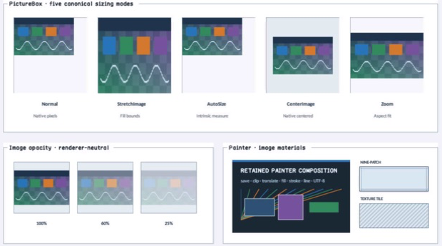

class · visual
PictureBox
PictureBox is a noninteractive Panel image presenter over Window-owned generational resources, with five canonical sizing modes, bounded opacity, inspectable image geometry, and image semantics.
Visual evidence

Ownership and hierarchy
- Hierarchy
- Panel → PictureBox
- Declaration
- include/gui_forms/controls/panel/picture_box/picture_box.hpp:21
- Definition
- src/controls/panel/picture_box/picture_box.cpp
Declared methods
PictureBox public
explicit PictureBox(StableId stable_id)Constructs a clipped image surface and registers its reflected SizeMode property schema.
image public
[[nodiscard]] ImageId image() const noexceptReturns the retained generational ImageId, which may be empty or stale.
set_image public
void set_image(ImageId image)Validates Window ownership when attached, selects the resource, and publishes image_changed after invalidation.
clear_image public
void clear_image()Routes through set_image with an empty ImageId so clearing obeys the same event order.
has_valid_image public
[[nodiscard]] bool has_valid_image() const noexceptReports whether the current ImageId resolves in the attached Window registry.
image_size public
[[nodiscard]] Size image_size() const noexceptReturns current resource pixel dimensions in logical Size form, or an empty size when unavailable.
size_mode public
[[nodiscard]] PictureBoxSizeMode size_mode() const noexceptReturns normal, stretch, auto-size, centered, or aspect-preserving zoom policy.
set_size_mode public
void set_size_mode(PictureBoxSizeMode mode)Validates the closed sizing vocabulary and updates measurement/paint/property state atomically.
image_opacity public
[[nodiscard]] double image_opacity() const noexceptReturns the retained image alpha multiplier.
set_image_opacity public
void set_image_opacity(double opacity)Accepts only finite values from zero through one and invalidates painting.
image_bounds public
[[nodiscard]] Rect image_bounds() const noexceptComputes the local destination rectangle from content bounds, source dimensions, and size mode.
image_changed public
[[nodiscard]] Event<ImageId>& image_changed() noexceptReturns the event published after a complete image selection change.
measure public
[[nodiscard]] Size measure(Size available) overrideUses source dimensions for auto-size and otherwise preserves ordinary Panel sizing constraints.
on_paint public
void on_paint(Painter& painter, Rect local_damage) overridePaints the Panel first, clips to content, and records the live image at resolved bounds and opacity.
hit_test_local public
[[nodiscard]] bool hit_test_local(Point local_point) const overrideKeeps PictureBox noninteractive so it does not intercept its container.
semantic_descriptor public
[[nodiscard]] SemanticDescriptor semantic_descriptor() const overrideProjects an image role, authored accessible text, and the current resource identity without exposing pixels.
content_bounds private
[[nodiscard]] Rect content_bounds() const noexceptReports the current content bounds value without mutation.